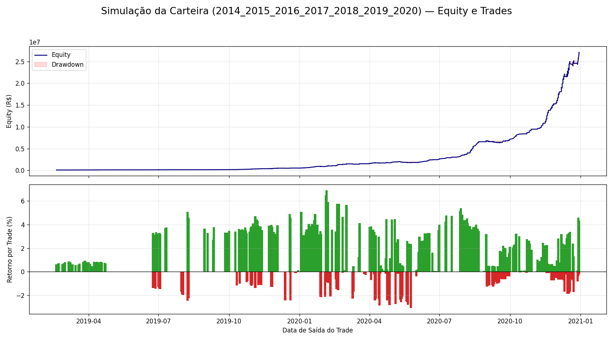
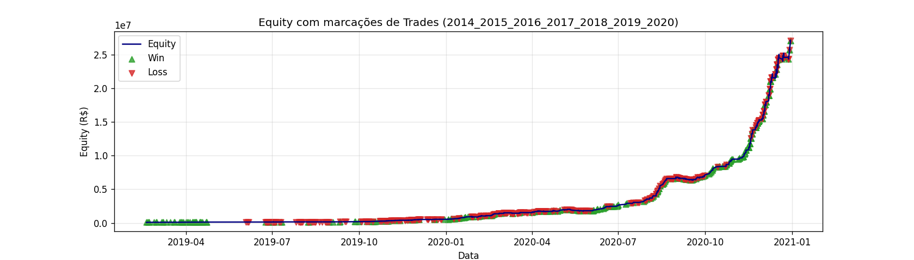

Visão Geral
O pipeline analisa dados históricos oficiais da B3 (COTAHIST), identifica pares de ações que mantêm um relacionamento estável no longo prazo e seleciona os melhores candidatos para uma estratégia de retorno à média. Em seguida, um backtest simula o robô operando esses pares com custos, hedge e controle de risco.
Etapas do Pipeline
1) Coleta e Preparação
Leitura dos arquivos COTAHIST (2014–2020), limpeza e montagem de uma matriz de preços diários por ticker.
2) Liquidez
Filtro para manter apenas ações com negociação consistente, garantindo entradas e saídas realistas.
3) Cointegração
Teste de Engle–Granger identifica pares com elo de longo prazo (o “elástico” que puxa de volta). Par é aprovado se o p-valor for menor que o limiar configurado.
4) Retorno à Média (Hurst)
Mede se o relacionamento entre o par tende a voltar ao centro (preferido para a estratégia) ou se costuma “caminhar” sem retorno.
5) Cruzamentos da Média
Conta quantas vezes o spread cruza sua média: mais cruzamentos significam mais oportunidades de trade.
6) Dependência de Cauda
Avalia o comportamento do par em extremos (quedas fortes), evitando pares que afundam juntos de forma perigosa.
7) Seleção Final
Combina critérios e ranqueia os melhores pares. O backtest utiliza os 30 primeiros por mean_crossings.
Como o Robô Opera
- Entrada: quando o z-score do spread se afasta muito do normal (limiar de entrada), o robô entra comprado na “barata” e vendido na “cara”, ou o inverso.
- Saída: quando o spread volta ao normal (limiar de saída), encerra a operação.
- Hedge: calcula a proporção (beta) para neutralizar movimentos gerais do mercado.
- Risco: limita o tamanho da posição, considera custos de transação e derrapagem (slippage) e pode aplicar stop por z-score extremo.
- Validação: aprende a relação no início (in-sample) e opera no restante (out-of-sample).
Resultados do Backtest
Métricas de Performance
Período: 2014-2020 (7 anos)
Número de pares selecionados: 30
Total de trades executados: 325
Retorno total: 26.951,44%
Retorno anualizado: 406,40%
Sharpe ratio: 6,21
Maximum drawdown: -12,51%
Win rate: 58,46%
Profit factor: 4,71
Visualização dos Trades

